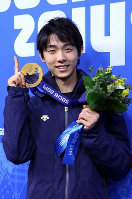
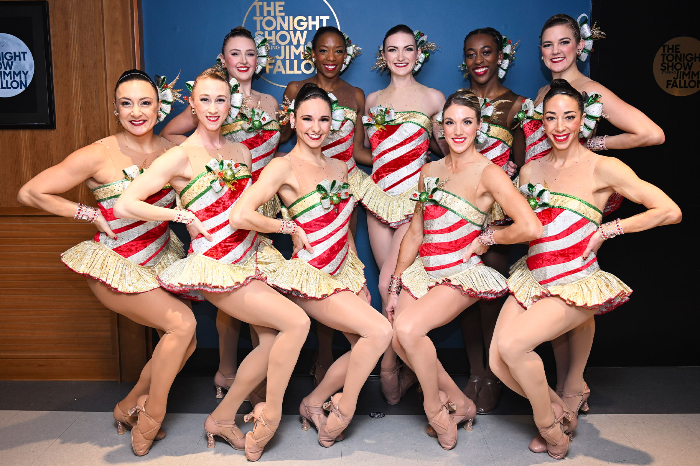

O que é patinação artística?
A patinação artística é um esporte que combina técnica atlética e expressão corporal. Os praticantes deslizam sobre o gelo usando patins com lâminas especiais, executando coreografias sincronizadas com música.
Os atletas realizam movimentos complexos como saltos, giros e sequências de passos, sendo avaliados por juízes com base na dificuldade técnica e na apresentação artística.
Categorias da patinação artística
-
Individual (Feminino e Masculino): Onde o atleta realiza saltos e giros por conta própria.
Essa categoria é uma das mais populares da patinação artística. Os atletas executam movimentos técnicos extremamente difíceis, incluindo saltos triplos e quádruplos.
Maiores AtletasYuzuru Hanyu é considerado um dos maiores nomes da patinação artística, conquistando 2 medalhas olímpicas de ouro e diversos títulos mundiais. Ele ficou famoso pela perfeição técnica e apresentações emocionantes.

-
Pares: Casais executam movimentos sincronizados, incluindo arremessos e levantamentos acrobáticos.
A categoria de pares exige extrema confiança entre os atletas, já que muitos movimentos envolvem equilíbrio e precisão.
Maiores AtletasA dupla russa Ekaterina Gordeeva e Sergei Grinkov é considerada uma das maiores da história da categoria de pares. Eles conquistaram 2 medalhas olímpicas de ouro e marcaram o esporte pela perfeita sincronização.

-
Dança no Gelo: Focada no ritmo, passos intrincados e interpretação musical, com movimentos mais próximos à dança de salão.
Diferente da categoria de pares, a dança no gelo prioriza elegância, interpretação artística e sincronização musical.
Maiores AtletasTessa Virtue e Scott Moir, do Canadá, são considerados a maior dupla da dança no gelo. Eles conquistaram 3 medalhas olímpicas de ouro e ficaram famosos pela conexão artística e apresentações emocionantes.

-
Patinação Sincronizada: Grupos grandes criam formações e coreografias em conjunto.
Nessa modalidade, equipes inteiras realizam movimentos sincronizados no gelo, formando linhas, círculos e figuras geométricas.
Maiores AtletasA equipe finlandesa Rockettes é uma das mais vitoriosas da história da patinação sincronizada, conhecida pela precisão e criatividade das coreografias.

Importância cultural
A patinação artística possui enorme importância cultural por unir esporte, música, dança e expressão artística em uma única modalidade.
As apresentações influenciam a moda, os figurinos teatrais e até produções cinematográficas, tornando o esporte popular em diversos países.
O esporte também ajudou a ampliar a participação feminina nas Olimpíadas, dando destaque para atletas mulheres desde o início do século XX.
Além disso, apresentações olímpicas históricas emocionam milhões de pessoas e transformam atletas em símbolos culturais mundiais.
História
A história da patinação artística começou na Europa, onde as pessoas utilizavam patins para se locomover sobre rios e lagos congelados.
Com o passar do tempo, os movimentos no gelo começaram a ganhar elementos artísticos, transformando-se em apresentações organizadas.
Origem Olímpica: Foi o primeiro esporte de inverno a ser incluído nos Jogos Olímpicos em 1908, antes mesmo da criação oficial dos Jogos Olímpicos de Inverno em 1924.
Ao longo das décadas, novas técnicas e saltos mais difíceis foram criados, tornando as apresentações cada vez mais impressionantes.
Adaptações: Além da versão sobre o gelo, existe a patinação artística sobre rodas, modalidade muito popular no Brasil e em países da América do Sul.
No Brasil: A modalidade é organizada pela Confederação Brasileira de Desportos no Gelo (CBDG) e pela Confederação Brasileira de Hóquei e Patinação (CBHP).
Mesmo sendo um país tropical, o Brasil possui atletas e competições importantes na modalidade, especialmente na patinação artística sobre rodas.
A falta de pistas de gelo ainda é um dos maiores desafios para o crescimento da modalidade no país.
Importância cultural e influência na mídia
A patinação artística foi uma das primeiras modalidades olímpicas a permitir ampla participação feminina, dando visibilidade às mulheres no esporte internacional.
Diversas atletas se tornaram ícones mundiais, inspirando novas gerações de esportistas e artistas.
O anime "Yuri on Ice" ajudou a popularizar a patinação artística entre o público jovem, mostrando competições, coreografias e os desafios emocionais dos atletas.

O filme "Eu, Tonya" (2017) retrata a história real da patinadora Tonya Harding e um dos maiores escândalos da história da patinação artística.

Influência na moda: Os figurinos usados pelos atletas inspiram tendências, combinando brilho, elegância e criatividade.
Grandes apresentações olímpicas também influenciam a música, a dança e produções televisivas ao redor do mundo.